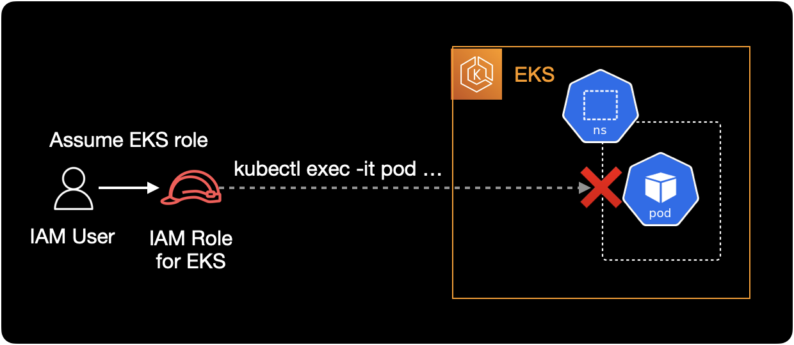
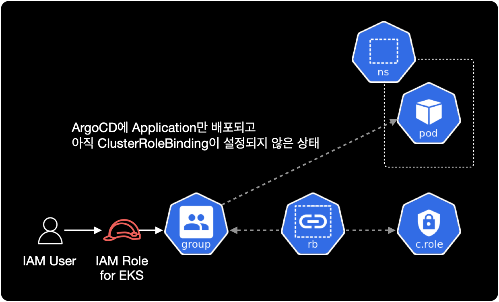
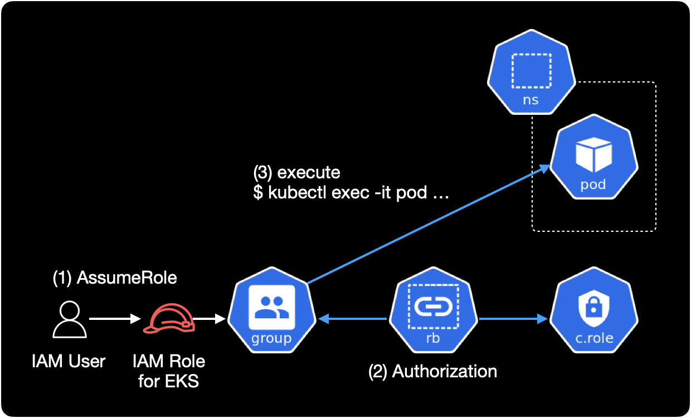
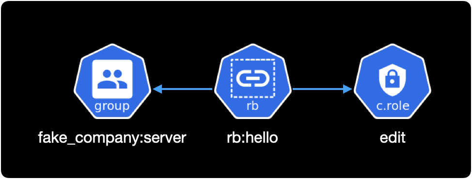

Pod 접속 불가 관련 RoleBinding 설정
개요
어느날 개발자 한 분이 ArgoCD에 새로 배포한 application의 pod에 접속이 안되는 문제가 발생했습니다.
이후 개발자분은 제게 도움을 요청했습니다.
해당 문제는 쿠버네티스의 RBAC 관련 리소스인 RoleBinding과 aws-auth ConfigMap에 관한 트러블슈팅 기록입니다.
증상
이 시나리오에서 application의 이름은 hello라고 가정합니다.
개발자가 터미널에서 kubectl exec 명령어를 사용하는 환경에서 hello 파드에 접근할 수 없는 상황입니다.

아래는 개발자가 터미널에서 hello 파드에 접속 시도할 때 발생하는 에러 메세지입니다.
$ kubectl exec -it hello-beta1-58cf69d988-64qjp -c main -- /bin/sh
Error from server (Forbidden): pods "hello-beta1-58cf69d988-64qjp" is forbidden: User "EKSGetTokenAuth" cannot create resource "pods/exec" in API group "" in the namespace "hello"
에러 메세지에서 중요한 부분은 pod/exec 리소스를 create 할 수 없다는 부분입니다.
쿠버네티스 사용자가 kubectl exec 명령어로 파드에 접속할 경우, pod/exec라는 리소스를 create 생성하도록 동작합니다.
원인
개발자 분이 ArgoCD에 Application만 배포하고 정작 Group에 적절한 RoleBinding이 부여되어 있지 않았습니다.
이로 인해 IAM User가 권한 부족으로 kubectl exec 명령어를 사용해 파드에 접속할 수 없었습니다.

해결방안
쿠버네티스 클러스터 관리자가 관련 application에 대한 RoleBinding을 추가하고 kubectl apply로 설정을 적용하면 됩니다.

상세 해결방법
1. RBAC 설정파일 변경
클러스터 권한을 관리하는 yaml 파일에서 hello namespace의 RoleBinding을 추가합니다.
제 경우는 모든 클러스터의 RBAC을 Github로 관리하기 때문에 IDE에서 수정했습니다.
...
---
# goodbye namespace
apiVersion: rbac.authorization.k8s.io/v1
kind: RoleBinding
metadata:
name: rb:goodbye
namespace: goodbye
roleRef:
kind: ClusterRole
name: edit
apiGroup: rbac.authorization.k8s.io
subjects:
- kind: Group
name: fake_company:server
apiGroup: rbac.authorization.k8s.io
- kind: Group
name: fake_company:platform
apiGroup: rbac.authorization.k8s.io
---
# hello namespace (새로 추가됨)
apiVersion: rbac.authorization.k8s.io/v1
kind: RoleBinding
metadata:
name: rb:hello
namespace: hello
roleRef:
kind: ClusterRole
name: edit
apiGroup: rbac.authorization.k8s.io
subjects:
- kind: Group
name: fake_company:server
apiGroup: rbac.authorization.k8s.io
이 환경에서 ClusterRoleBinding이 아닌 RoleBinding을 사용해서 연결하는 이유는,
해당 EKS 클러스터는 네임스페이스 단위로 프로젝트를 운영하는 환경이기 때문에 권한도 마찬가지로 네임스페이스 단위로 관리해야 하기 떄문입니다.
2. 권한 대상 확인
RoleBinding에 작성한 roleRef와 subjects가 실제로 쿠버네티스 안에 존재하는지, 어떤 권한이 부여되어 있는지를 직접 확인합니다.
kubectl apply로 실제 클러스터에 권한을 적용하기 전에 반드시 해야하는 중요한 검증 과정입니다.
roleRef: 연결할 Role 또는 ClusterRole을 의미합니다. Role과 ClusterRole에 실제 사용할 권한이 부여되어 있습니다.subjects: Role의 권한을 사용할 주체인User나Group을 의미합니다.
roleRef
clusterroles 리소스가 클러스터에 존재합니다.
$ kubectl api-resources \
--api-group='rbac.authorization.k8s.io'
NAME SHORTNAMES APIVERSION NAMESPACED KIND
clusterrolebindings rbac.authorization.k8s.io/v1 false ClusterRoleBinding
clusterroles rbac.authorization.k8s.io/v1 false ClusterRole
rolebindings rbac.authorization.k8s.io/v1 true RoleBinding
roles rbac.authorization.k8s.io/v1 true Role
참고로 clusterroles 리소스는 네임스페이스가 없는 글로벌한 리소스입니다.
ClusterRole 목록에서 edit이라는 이름의 ClusterRole이 존재하는지 확인합니다.
$ kubectl get clusterrole edit
NAME CREATED AT
edit 2022-02-24T04:05:00Z
edit ClusterRole에 부여된 쿠버네티스 권한 정보를 확인합니다.
아까 에러 메세지에서 본 것처럼 사용자가 파드에 접속하려면 pods/exec 리소스의 create 권한이 무조건 필요합니다.
$ kubectl describe clusterrole edit
Name: edit
Labels: kubernetes.io/bootstrapping=rbac-defaults
rbac.authorization.k8s.io/aggregate-to-admin=true
Annotations: rbac.authorization.kubernetes.io/autoupdate: true
PolicyRule:
Resources Non-Resource URLs Resource Names Verbs
--------- ----------------- -------------- -----
analysisruns.argoproj.io [] [] [create delete deletecollection get list patch update watch]
analysistemplates.argoproj.io [] [] [create delete deletecollection get list patch update watch]
clusteranalysistemplates.argoproj.io [] [] [create delete deletecollection get list patch update watch]
experiments.argoproj.io [] [] [create delete deletecollection get list patch update watch]
rollouts.argoproj.io/scale [] [] [create delete deletecollection get list patch update watch]
rollouts.argoproj.io/status [] [] [create delete deletecollection get list patch update watch]
rollouts.argoproj.io [] [] [create delete deletecollection get list patch update watch]
configmaps [] [] [create delete deletecollection patch update get list watch]
endpoints [] [] [create delete deletecollection patch update get list watch]
persistentvolumeclaims [] [] [create delete deletecollection patch update get list watch]
pods [] [] [create delete deletecollection patch update get list watch]
replicationcontrollers/scale [] [] [create delete deletecollection patch update get list watch]
replicationcontrollers [] [] [create delete deletecollection patch update get list watch]
services [] [] [create delete deletecollection patch update get list watch]
daemonsets.apps [] [] [create delete deletecollection patch update get list watch]
deployments.apps/scale [] [] [create delete deletecollection patch update get list watch]
deployments.apps [] [] [create delete deletecollection patch update get list watch]
replicasets.apps/scale [] [] [create delete deletecollection patch update get list watch]
replicasets.apps [] [] [create delete deletecollection patch update get list watch]
statefulsets.apps/scale [] [] [create delete deletecollection patch update get list watch]
statefulsets.apps [] [] [create delete deletecollection patch update get list watch]
horizontalpodautoscalers.autoscaling [] [] [create delete deletecollection patch update get list watch]
cronjobs.batch [] [] [create delete deletecollection patch update get list watch]
jobs.batch [] [] [create delete deletecollection patch update get list watch]
daemonsets.extensions [] [] [create delete deletecollection patch update get list watch]
deployments.extensions/scale [] [] [create delete deletecollection patch update get list watch]
deployments.extensions [] [] [create delete deletecollection patch update get list watch]
ingresses.extensions [] [] [create delete deletecollection patch update get list watch]
networkpolicies.extensions [] [] [create delete deletecollection patch update get list watch]
replicasets.extensions/scale [] [] [create delete deletecollection patch update get list watch]
replicasets.extensions [] [] [create delete deletecollection patch update get list watch]
replicationcontrollers.extensions/scale [] [] [create delete deletecollection patch update get list watch]
ingresses.networking.k8s.io [] [] [create delete deletecollection patch update get list watch]
networkpolicies.networking.k8s.io [] [] [create delete deletecollection patch update get list watch]
poddisruptionbudgets.policy [] [] [create delete deletecollection patch update get list watch]
clustersecretstores.external-secrets.io [] [] [create delete deletecollection patch update get watch list]
externalsecrets.external-secrets.io [] [] [create delete deletecollection patch update get watch list]
secretstores.external-secrets.io [] [] [create delete deletecollection patch update get watch list]
deployments.apps/rollback [] [] [create delete deletecollection patch update]
deployments.extensions/rollback [] [] [create delete deletecollection patch update]
pods/attach [] [] [get list watch create delete deletecollection patch update]
pods/exec [] [] [get list watch create delete deletecollection patch update]
pods/portforward [] [] [get list watch create delete deletecollection patch update]
pods/proxy [] [] [get list watch create delete deletecollection patch update]
secrets [] [] [get list watch create delete deletecollection patch update]
services/proxy [] [] [get list watch create delete deletecollection patch update]
bindings [] [] [get list watch]
events [] [] [get list watch]
limitranges [] [] [get list watch]
namespaces/status [] [] [get list watch]
namespaces [] [] [get list watch]
persistentvolumeclaims/status [] [] [get list watch]
pods/log [] [] [get list watch]
pods/status [] [] [get list watch]
replicationcontrollers/status [] [] [get list watch]
resourcequotas/status [] [] [get list watch]
resourcequotas [] [] [get list watch]
services/status [] [] [get list watch]
controllerrevisions.apps [] [] [get list watch]
daemonsets.apps/status [] [] [get list watch]
deployments.apps/status [] [] [get list watch]
replicasets.apps/status [] [] [get list watch]
statefulsets.apps/status [] [] [get list watch]
horizontalpodautoscalers.autoscaling/status [] [] [get list watch]
cronjobs.batch/status [] [] [get list watch]
jobs.batch/status [] [] [get list watch]
daemonsets.extensions/status [] [] [get list watch]
deployments.extensions/status [] [] [get list watch]
ingresses.extensions/status [] [] [get list watch]
replicasets.extensions/status [] [] [get list watch]
nodes.metrics.k8s.io [] [] [get list watch]
pods.metrics.k8s.io [] [] [get list watch]
ingresses.networking.k8s.io/status [] [] [get list watch]
poddisruptionbudgets.policy/status [] [] [get list watch]
serviceaccounts [] [] [impersonate create delete deletecollection patch update get list watch]
ClusterRole의 전체 권한 정보 중 pods/exec 리소스에 대해서만 확인하려면 아래 명령어를 실행합니다.
$ kubectl describe clusterrole edit | grep 'pods/exec'
pods/exec [] [] [get list watch create delete deletecollection patch update]
clusterrole인 edit에는 pod/exec 리소스의 create를 포함한 대부분의 권한이 부여된 걸 확인할 수 있습니다.
subjects
roleRef 정보를 확인했으니 이제 subjects인 fake_company:server 그룹을 확인합니다.
특정 IAM Role이 kubernetes group에 매핑되어 있는 구조입니다.
사용자의 컨텍스트 환경
EKS에 kubectl로 접근하는 사용자인 개발자들은 kubeconfig에 EKS 컨텍스트를 등록할 때 IAM Role을 AssumeRole해서 등록한 상황입니다.
$ aws eks update-kubeconfig \
--region ap-northeast-2 \
--name fake-company-dev-a \
--role-arn arn:aws:iam::123456789012:role/eks-role@hello
이후 개발자가 kubectl 명령어로 EKS 클러스터에 접근할 때 eks-role@hello IAM Role을 Assume해서 접근하게 됩니다.
--role-arn 옵션
클러스터 인증을 위한 IAM Role을 Assume하려면 --role-arn 옵션으로 IAM Role의 ARN을 지정하면 됩니다.
예를 들어 IAM Role을 Assume하면서 EKS 클러스터를 생성한 경우 처음에 클러스터에 연결하려면 해당 역할도 수임해야 합니다.
EKS의 경우 aws-auth ConfigMap에 IAM Role과 그룹을 매핑해서 사용합니다.
aws-auth ConfigMap의 설정 정보를 확인합니다.
$ kubectl get configmap aws-auth \
-n kube-system \
-o yaml
aws-auth ConfigMap의 내용은 다음과 같습니다.
apiVersion: v1
data:
mapRoles: |
- groups:
...
# fake_company:server group
- groups:
- system:authenticated
- fake_company:server
- eks-console-access-group
rolearn: arn:aws:iam::123456789012:role/eks-role@hello
username: "{{SessionName}}"
mapUsers: |
- groups:
- system:masters
userarn: arn:aws:iam::123456789012:user/alice
username: alice
- groups:
...
kind: ConfigMap
metadata:
...
IAM User가 EKS 전용 IAM Role을 Assume해서 권한을 얻는 역할기반 접근제어(RBAC) 구성입니다.
data.mapRoles에서 IAM Role과 사용자의 권한 정보가 제대로 구성되었는지 확인합니다.
3. RoleBinding 적용
RoleBinding 내용을 새로 추가한 rbac 파일을 적용합니다.
YOUR_RBAC_FILENAME.yaml은 자신이 관리하고 있는 RBAC 매니페스트 파일 이름에 맞게 바꿔줍니다.
$ kubectl apply -f YOUR_RBAC_FILENAME.yaml
4. 테스트
쿠버네티스 클러스터에서 RoleBinding이 새로 추가되었는지 확인합니다.
$ kubectl get rolebinding rb:hello -o yaml
rb:hello라는 이름의 RoleBinding이 새로 생성되었습니다.
또한 권한을 사용할 주체인 subjects와 roleRef도 알맞게 들어간 걸 확인할 수 있습니다.
apiVersion: rbac.authorization.k8s.io/v1
kind: RoleBinding
metadata:
annotations:
kubectl.kubernetes.io/last-applied-configuration: |
{"apiVersion":"rbac.authorization.k8s.io/v1","kind":"RoleBinding","metadata":{"annotations":{},"name":"rb:hello","namespace":"hello"},"roleRef":{"apiGroup":"rbac.authorization.k8s.io","kind":"ClusterRole","name":"edit"},"subjects":[{"apiGroup":"rbac.authorization.k8s.io","kind":"Group","name":"fake_company:server"}]}
creationTimestamp: "2022-07-19T09:14:01Z"
name: rb:hello
namespace: hello
resourceVersion: "123456789"
uid: x4xx0077-x871-49xx-x420-x8xx8xx4468x
roleRef:
apiGroup: rbac.authorization.k8s.io
kind: ClusterRole
name: edit
subjects:
- apiGroup: rbac.authorization.k8s.io
kind: Group
name: fake_company:server
위 RoleBinding 내용을 그림으로 표현하면 아래와 같습니다.

바인딩된 대상subjects은 fake_company:server Group이고, 대상에 연결한 롤roleRef은 edit ClusterRole 입니다.
RoleBinding 적용 이후 개발자가 kubectl exec 명령어를 사용해서 Pod에 정상 접속할 수 있었습니다.
결론
개발자분이 의외로 Role, RoleBinding 부분에 대해서는 깊게 모르다보니 어플리케이션 배포 이후 권한 신청 조차 해야하는지를 모를 때가 있습니다.
이 경우에도 개발자분이 Application만 ArgoCD에 배포하고, RBAC 요청을 하지 않아서 발생한 케이스입니다.
결국 모든 과정을 사람이 하는 일이다 보니 RoleBinding 부분을 먼저 이야기 했어야 했는데 저와 개발자 모두 이 부분을 놓쳐버린 점은 좀 아쉽습니다.
그래도 개발자분들이 더 쉽게 쿠버네티스를 이용할 수 있도록 DevOps Engineer가 가이드를 만들고 개발자들에게 꾸준히 쿠버네티스 우수사례를 공유한다면, 이런 오류 빈도는 크게 줄어들 수 있다고 생각합니다.